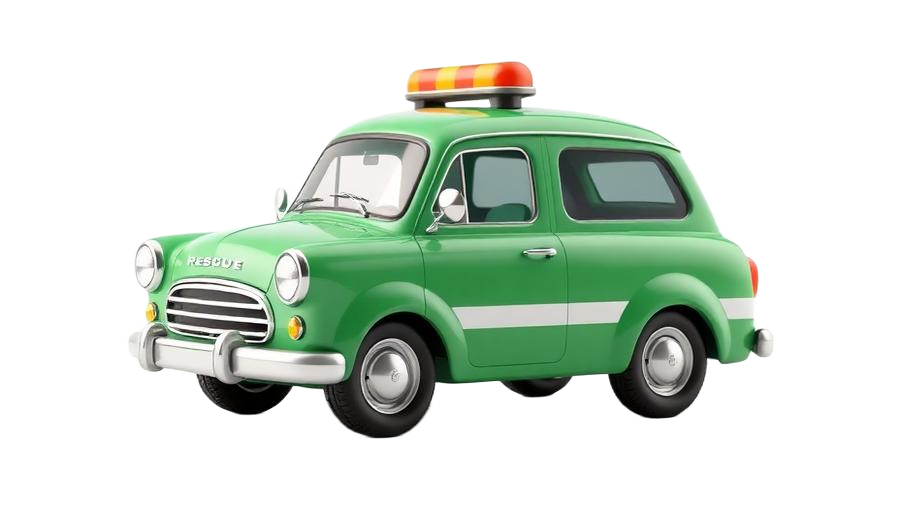
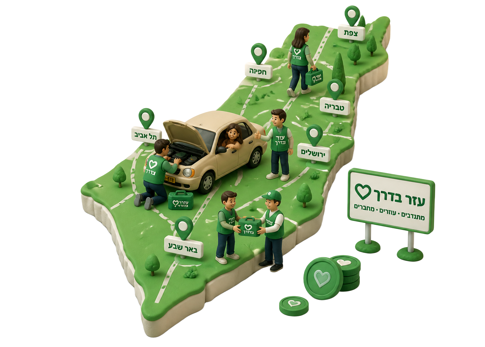
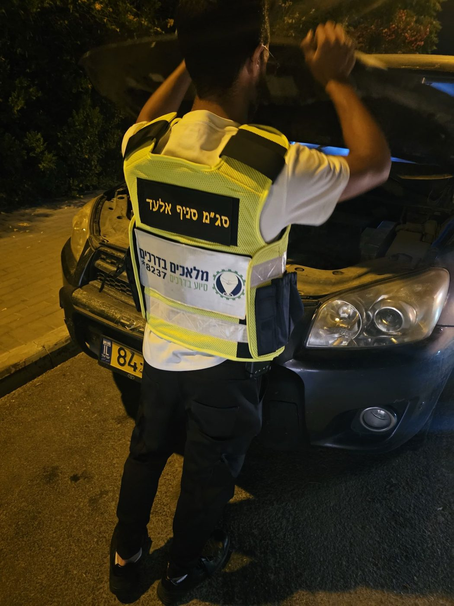
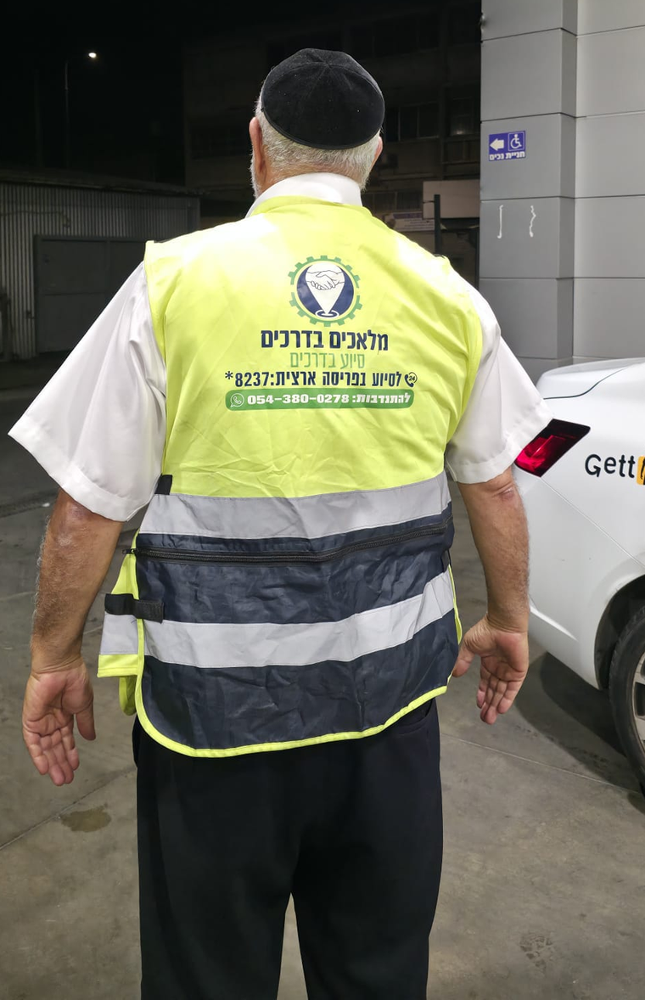
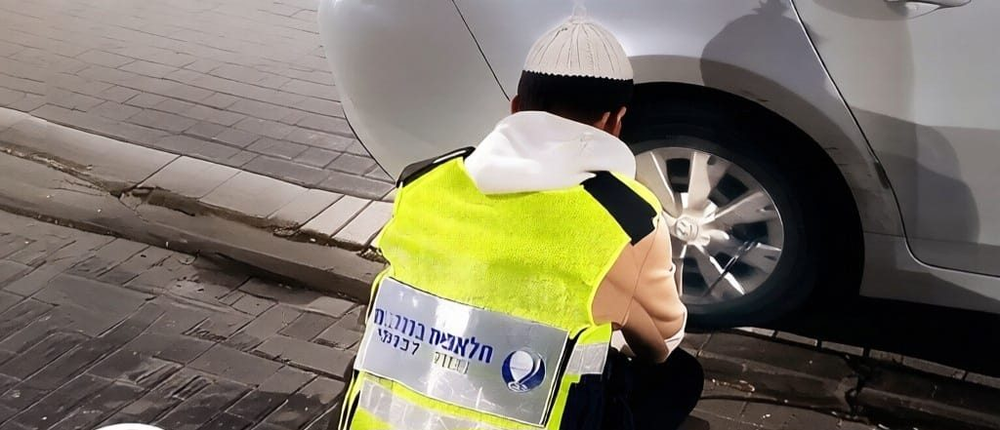

בשתיים בלילה, בגשם, עם שני ילדים ברכב. הוא הגיע, החליף גלגל ולא הסכים לקבל שקל.
רחלי, בית שמש
עוד סיפורים מהשטח ←
מכל הלב · בכל דרך
מוקד חירום 24/6 ומאות מתנדבים שיוצאים לדרך ברגע שאתם נתקעים: פנצ'ר, מצבר, דלת נעולה, חילוץ בשטח ואיתור נעדרים. מכל הלב, בכל דרך, בלי עלות ובלי תנאים, מתוך שליחות ולזכר נרצחי השבעה באוקטובר.

בשתיים בלילה, בגשם, עם שני ילדים ברכב. הוא הגיע, החליף גלגל ולא הסכים לקבל שקל.
רחלי, בית שמש
עוד סיפורים מהשטח ←כל תרומה הופכת לציוד חילוץ, כבלים, אפודים והכשרות למתנדבים.

12% מיעד גיוס הציוד לשנה זו
תרום עכשיוארגון מלאכים בדרכים הוקם מתוך מטרה אחת: שאף אדם לא יישאר תקוע בצד הדרך. מפנצ'רים ובעיות מצבר, דרך נזילות שמן ועד ילדים שננעלו ברכב – אנחנו מגיעים מהר, נותנים מענה מקצועי, ומלווים עד שאתם חוזרים בבטחה לדרך.

בחרו אזור על המפה כדי לראות מי הכוננים שלנו שם, כמה מתנדבים פעילים ומהו זמן ההגעה הממוצע.
האיור להמחשה בלבד · לחצו על סיכה לפרטי האזור
שמונה מערכי סיוע מרכזיים, בכל שעה ובכל מקום בארץ – מבוצעים על ידי מתנדבים מוסמכים עם ציוד מקצועי.
החלפת גלגל, ניפוח וטיפול בפנצ'ר בכל שעה ובכל מקום בארץ – בלי לחכות שעות בצד הכביש.
כבלים, בוסטר וטיפול בהנעה לרכבים פרטיים, מסחריים ומשאיות – מענה מהיר של כונן מהאזור.
דלת טרוקה, מפתחות שנשארו בפנים, וחילוץ דחוף של ילדים או חיות שננעלו ברכב.
חילוץ רכבים ששקעו בחול, בבוץ או בשטח פתוח בעזרת מתנדבים עם ציוד חילוץ מקצועי.
השלמת נוזלים, מים לרדיאטור וסיוע בדלק כדי להחזיר אתכם לדרך בבטחה.
מערך כוננים ארצי המסייע בחיפושים ובאיתור נעדרים בשיתוף גורמי ההצלה.
מענה לאירועי לחץ של לכודים במעליות ובבתים – גם מחוץ לכביש אנחנו שם.
בדיקה ראשונית, הנחיות בטיחות ותיאום גרירה למוסך הקרוב ביותר.
7.10לא שוכחים · לא מוותרים
הארגון הוקם לא רק כדי לסייע לנהגים, אלא גם כדי להנציח את זכרם של הנרצחים והחטופים של השבעה באוקטובר. כל מתנדב שיוצא בלילה לכביש חשוך, כל גלגל שמוחלף בגשם, כל דלת שנפתחת כדי לחלץ ילד – כל אלה הם המשך של אור שניסו לכבות.
כל המציל נפש אחת מישראל כאילו קיים עולם מלא


אני יוצא
אין לנו גוררים בשכר ואין לנו משמרות. יש לנו מאות אנשים עם אפוד בתא המטען, שמפסיקים את מה שהם עושים ויוצאים לדרך, בלילה, בגשם, בחג, בלי לבקש שקל.
עדכונים שוטפים מהשטח, מהמוקד ומהסניפים.

נתקעתי עם שני ילדים ברכב בצד כביש 38. תוך 9 דקות הגיע מתנדב, החליף גלגל ולא הסכים לקבל שקל. פשוט מלאכים.

המפתחות ננעלו בפנים עם התינוקת בתוך הרכב. המוקד הרגיע אותי בטלפון והכונן פתח את הדלת בלי שריטה אחת.

המצבר מת בשלוש לפנות בוקר בגליל. חשבתי שאין סיכוי, והם באמת הגיעו. יש עוד טוב בעולם.

שקעתי בחול בדרך למכתש. מתנדב עם ג'יפ וכבל חילוץ הוציא אותי וליווה אותי עד לכביש הראשי.
מחייגים למוקד *8237 בשיחה רגילה (לא בוואטסאפ), מוסרים מיקום ותיאור קצר של התקלה, והכונן הקרוב אליכם יוצא לדרך.
המוקד פעיל 24 שעות ביממה, 6 ימים בשבוע. נסגר שעה לפני כניסת השבת ונפתח שעה לאחר יציאתה.
השירות ניתן ללא עלות וללא תנאים. אנחנו עמותה התנדבותית – כל התרומות מופנות לציוד, הכשרות והרחבת הפריסה.
כל אדם עם רצון טוב לעזור. אין צורך בניסיון קודם – אנחנו מספקים הכשרה, אפוד וציוד על חשבון הארגון.
עוצרים בשול במקום בטוח, מדליקים אורות חירום ומציבים משולש אזהרה, ומתקשרים למוקד – ננחה אתכם עד שהכונן מגיע.
העמותה פועלת בשקיפות מלאה. כל תרומה מופנית לרכישת ציוד חילוץ, הכשרת מתנדבים והרחבת השירות.
מוקד חירום ארצי, מתנדבים בכל אזור בארץ, מענה מיידי – והכול בהתנדבות מלאה וללא עלות.
בקשות סיוע מתקבלות בשיחה טלפונית בלבד למוקד *8237 – לא בוואטסאפ. הוואטסאפ מיועד לפניות התנדבות בלבד.
מעוניין להתנדב